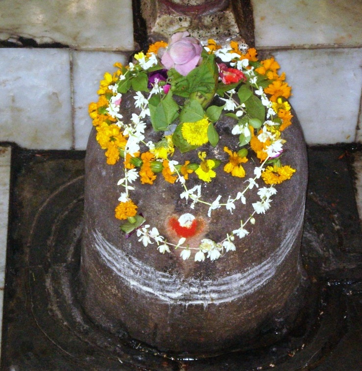

<?xml version="1.0" encoding="UTF-8"?><rss version="2.0"
	xmlns:content="http://purl.org/rss/1.0/modules/content/"
	xmlns:wfw="http://wellformedweb.org/CommentAPI/"
	xmlns:dc="http://purl.org/dc/elements/1.1/"
	xmlns:atom="http://www.w3.org/2005/Atom"
	xmlns:sy="http://purl.org/rss/1.0/modules/syndication/"
	xmlns:slash="http://purl.org/rss/1.0/modules/slash/"
	>

<channel>
	<title>Prayageshwar &#8211; Varanasi Temples</title>
	<atom:link href="index.html" rel="self" type="application/rss+xml" />
	<link>../../../../../index.html</link>
	<description>Temples of Varanasi as referred to in Kashi Khand</description>
	<lastBuildDate>Thu, 19 Jun 2025 05:16:46 +0000</lastBuildDate>
	<language>en-US</language>
	<sy:updatePeriod>hourly</sy:updatePeriod>
	<sy:updateFrequency>1</sy:updateFrequency>
	<generator>https://wordpress.org/?v=4.6.29</generator>
	<item>
		<title>PRAYAGESHWAR</title>
		<link>../../../../../shiva-temples/prayageshwar/index.html</link>
		<pubDate>Mon, 10 May 2010 02:46:44 +0000</pubDate>
		<dc:creator><![CDATA[admin]]></dc:creator>
				<category><![CDATA[Other Shiva Temples (L-R)]]></category>
		<category><![CDATA[Prayageshwar]]></category>
		<category><![CDATA[Shiva Temples]]></category>
		<category><![CDATA[bandi devi temple]]></category>
		<category><![CDATA[prayag]]></category>
		<category><![CDATA[prayageshwar]]></category>
		<category><![CDATA[teerth]]></category>

		<guid isPermaLink="false">../../../../../p=390.html</guid>
		<description><![CDATA[According to Chapter 61, Kashi Khand, Lord Vishnu has described the various Teerths as also various forms of Keshav in Kashi. Much importance has been attached to Prayag Teerth (Dasaswamedh).  Special mention has also been made of Prayageshwar. A devotee who bathes in Prayag Teerth in Magh Month and worships Prayageshwar is assured of wealth, [&#8230;]]]></description>
				<content:encoded><![CDATA[<p>According to Chapter 61, Kashi Khand, Lord Vishnu has described the various Teerths as also various forms of Keshav in Kashi.</p>
<p>Much importance has been attached to Prayag Teerth (Dasaswamedh).  Special mention has also been made of Prayageshwar. A devotee who bathes in Prayag Teerth in Magh Month and worships Prayageshwar is assured of wealth, food grains, devoted children and ultimately he will attain Moksha.</p>
<p></p>
<p style="text-align: center;"><strong>(PRAYAGESHWAR)</strong></p>
<p>One point needs to be mentioned.  Prayag is a famous place in Allahabad and thousands of devotees assemble there in the Magha Month (during winter) for taking a holy dip. Once in twelve years, Kumbh Mela is held and during the Magha Month falling during that year, this place draws devotees to the tune of several crores.  Prayag Teerth in Kashi is a part of Dasaswamedh and taking bath here gives the benefit of taking bath in Prayag at Allahabad.</p>
<p><strong><span style="text-decoration: underline;">LOCATION OF PRAYAGESHWAR</span></strong></p>
<p>Prayageshwar is located in the premises of Bandi Devi temple at D.17/100, Dasaswamedh. Devotees can travel upto Dasaswamedh by rickshaw and just before the Ghat, they have to take a right turn. It is advisable to ask for directions from local shop keepers as there are several labyrinthine (confusing) gullies in the vicinity.</p>
<p><strong> </strong></p>
<p><strong><span style="text-decoration: underline;">TYPES OF POOJA</span></strong></p>
<p>The temple remains open from 08.00 a.m. to 11.00 a.m. However, devotees can have darshan through grilled door throughout.</p>
<p>&nbsp;</p>
]]></content:encoded>
			</item>
	</channel>
</rss>
